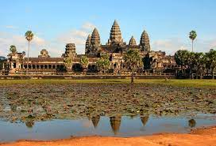
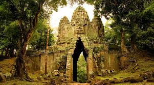
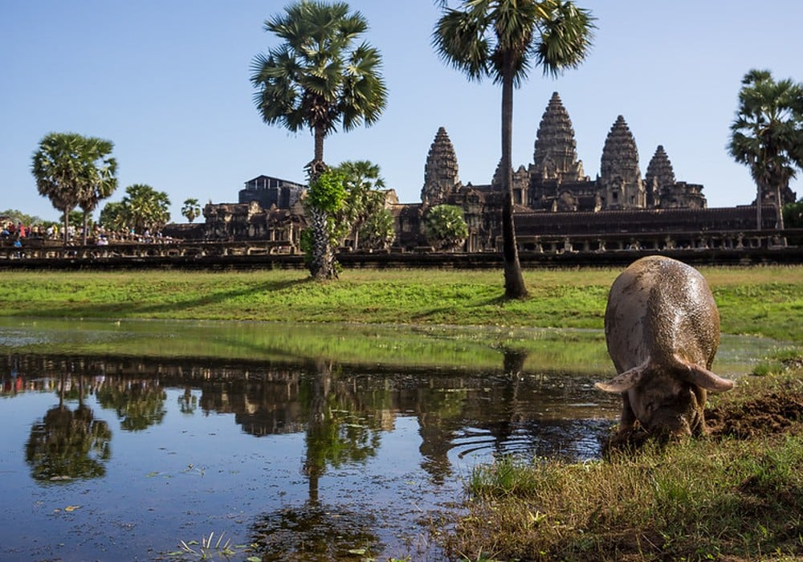
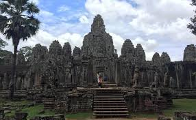

Templos Angkor
Angkor es una región de Camboya que alojó las sucesivas capitales del Imperio jemer durante su época de esplendor. El denominado Imperio angkoriano1 dominó el Sudeste Asiático, desde el mar de China hasta el golfo de Bengala, entre los siglos ix y xv de nuestra era. Sus monumentos y templos, declarados Patrimonio de la Humanidad por la Unesco en el año 1992,2 se encuentran cerca de la actual ciudad de Siem Riep.
Solo recientemente esta área ha sido recuperada de la selva, con la excepción de su templo más importante, el templo de Angkor Wat, que aunque dedicado originalmente al dios hindú Vishnú, nunca llegó a abandonarse, siendo mantenido desde hace siglos por monjes budistas. Varios países han participado en las labores de reconstrucción de los templos, siendo los principales responsables los arqueólogos de la École Française d'Extreme Orient ('Escuela Francesa de Extremo Oriente'), cuya labor se remonta a 1908.3
Historia de los templos
La verdad es que los templos son tan impresionantes que su visita se puede disfrutar sin tener la menor idea de la historia de los Templos de Angkor, ni de la civilización jemer que los construyó.
Aun así recomendamos muchísimo, o bien hacer la visita con un buen guía local, o bien leer sobre la historia del imperio jemer, de Angkor y de los templos que se desee visitar: esto, sin duda, aportará una dimensión de profundidad a la visita, y os permitirá entrever la historia que se esconde detrás de las piedras.
Angkor Wat
Como todos los demás templos jemer, Angkor Wat fue construido con piedra, un material destinado a durar por la eternidad. La piedra utilizada para la mayoría de los templos de Angkor fue arenisca extraída del monte Kulen, ubicado a unos veinte kilómetros de distancia.
El inmenso foso del templo no solo tenía una función simbólica, también ocupaba una función esencial para la supervivencia del templo: el agua que rodea al templo se utilizó para regular el nivel del agua que, demasiado alto durante la temporada de lluvias y retrocediendo durante la estación seca, amenazaba con sacudir los cimientos del templo.
A diferencia de los otros templos jemer que miran al este, el templo mira al oeste. Debido a esta orientación inusual, los primeros investigadores creían que el templo simbolizaba el final de un ciclo (la puesta de sol en el oeste). Concluyeron que Angkor Wat podría ser el mausoleo del rey Suryavarma II. Sin embargo, esta idea fue posteriormente rechazada por los historiadores. Angkor Wat sería sobre todo un templo donde se veneraba a Vishnu así como al espíritu de Suryavarma II que se había « unido al paraíso de Vishnu ». En cuanto a su orientación hacia el oeste, se explicaría por el hecho de que Vishnu era el gobernante de los territorios occidentales.
Templo Bayon
El templo de Bayón es un complejo de culto en el centro de la antigua ciudad de Angkor Thom, que se encuentra en la región de Angkor, Camboya. El complejo de Angkor, incluido Angkor Thom, fue declarado Patrimonio de la Humanidad por la Unesco en 1992.1
Construido a finales del siglo xii, se terminó durante el reinado de Jayavarman VII. Fue creado en estilo budista. Es sobre todo conocido por sus 54 torres y cerca de 200 enigmáticas caras sonrientes.
